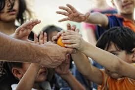

Supporting impactful initiatives that improve lives and communities worldwide.
At Deusel Consultants, we believe that meaningful humanitarian initiatives should never be hindered by financial constraints. Our specialized service focuses on providing the necessary financial and advisory support to launch and sustain projects that create positive social impact.
We work closely with organizations, NGOs, and social entrepreneurs to develop sustainable funding models, optimize resource allocation, and establish strong operational frameworks that ensure long-term success and maximum impact.
Committed to supporting initiatives that address critical social needs

We conduct a comprehensive analysis of your humanitarian initiative, identifying key funding needs, potential challenges, and opportunities for sustainable impact.
We develop tailored funding strategies that may include grants, impact investments, partnerships, and innovative financing models to support your project's launch and growth.
We help you establish strategic partnerships with key stakeholders, including funders, implementation partners, and community organizations to strengthen your initiative.
We implement robust frameworks to measure, track, and communicate the social impact of your humanitarian project, ensuring accountability and continuous improvement.
We helped a small NGO secure initial funding and develop a sustainable operational model for their clean water project, which now serves over 20,000 people across multiple communities.
We supported a healthcare initiative by developing a hybrid funding model that combined grants, community contributions, and revenue-generating activities, creating a sustainable healthcare solution.
Partner with Deusel Consultants to develop a sustainable funding and operational strategy for your impactful project.
We support a wide range of humanitarian initiatives, including but not limited to clean water projects, healthcare access programs, education initiatives, food security solutions, and community development efforts. We're particularly interested in projects that demonstrate potential for sustainable impact and address critical community needs.
Our approach to supporting start-up costs is multifaceted. We help identify and secure appropriate funding sources, develop resource allocation strategies, create sustainable financial models, and establish operational frameworks that maximize efficiency. Our goal is not just to help you launch but to set your project up for long-term success and impact.
Our assessment process begins with an initial consultation to understand your project's goals, needs, and current status. We then conduct a comprehensive analysis of the project's potential impact, financial requirements, operational considerations, and sustainability factors. This assessment forms the foundation for developing a tailored support strategy.
We believe in robust impact measurement that goes beyond simple metrics. We work with you to establish clear key performance indicators (KPIs) aligned with your project's objectives. These may include quantitative measures (number of beneficiaries, services delivered) and qualitative assessments (quality of life improvements, community feedback). We implement monitoring systems that track progress and inform continuous improvement.